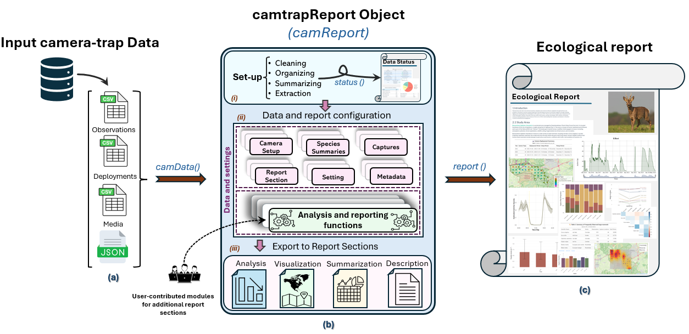

camtrapReport
Reproducible reporting for camera-trap monitoring data


camtrapReport converts camera-trap data in Camtrap DP format into two configurable HTML outputs:
- a Data Status Check for data completeness, consistency, annotation, and spatiotemporal coverage; and
- an Ecological Report containing selected summaries, analyses, figures, maps, tables, metadata, and explanatory text.

Installation
Install the development version from GitHub:
if (!requireNamespace("pak", quietly = TRUE)) {
install.packages("pak")
}
pak::pkg_install("spatialecology/camtrapReport")Optional dependencies required by report modules can be installed with camtrapReport::install_all().
Quick start
The example below uses a compact subset of the GMU8_LEUVEN dataset. The data are copied to a temporary directory because camData() may write processed files alongside the input data. The subset is intended for demonstration and testing, not ecological inference; its preparation is documented here.
library(camtrapReport)
source_dir <- system.file(
"external",
package = "camtrapReport",
mustWork = TRUE
)
example_root <- tempfile("camtrapReport-example-")
dir.create(example_root)
stopifnot(file.copy(
file.path(source_dir, "dataset"),
example_root,
recursive = TRUE,
copy.mode = FALSE
))
cm <- camData(
data = file.path(example_root, "dataset"),
habitat = read.csv(file.path(source_dir, "habitat", "habitat.csv")),
study_area = file.path(source_dir, "study_area", "study_area.shp"),
update = TRUE
)
#> The camReport object is being created...
#> Dataset size: 9.6 MB.
#> File size looks modest, but full object creation may still take several minutes depending on the number of records.
#> Setup is done!
#> Data loaded successfully in 35 sec.
#> camReport object is ready for GMU8 LEUVEN.
cm
#> Camera trap Object for the site : GMU8 LEUVEN
#> =====================================================
#> Total number of sequences : 10182
#> Total number of observations : 10798
#> Total number of animals : 4693
#> Total number of detected species: 41
#> Date/time (years) with data : 2018, 2019, 2020, 2021, 2022, and 2023
#> -----------------------------------------------------A Camtrap DP ZIP archive or extracted directory is the only required input. Habitat data and a study-area boundary are optional.
Generate the two reports:
status_file <- status(
cm,
filename = file.path(example_root, "status.html"),
view = FALSE
)
report_file <- report(
cm,
filename = file.path(example_root, "ecological-report.html"),
view = FALSE
)Inspect metadata and select report sections:
info(cm, name = c("title", "authors"))
#> $title
#> [1] "Camera-Trap Monitoring Report for GMU8 LEUVEN, Belgium"
#>
#> $authors
#> [1] "Martijn Bollen, Niko Boone, Jim Casaer, Peter Desmet, Sander Devisscher, Sanne Govaert, Lynn Pallemaerts, Anneleen Rutten, and Jan Vercammen"
#>
#> attr(,"class")
#> [1] "camInfo"
selected_sections <- section_names(
keep = c("introduction", "methods", "study_area", "sampling", "effort")
)
sections(cm, selected_sections)Use gui(cm) to configure and generate reports interactively.
Scope and interpretation
camtrapReport supports reporting rather than general camera-trap data management or specialised ecological modelling. It complements camtrapdp, camtraptor, camtrapR, and ct.
The package has been evaluated with real camera-trap datasets and by independent users, but it has not yet been applied in a published ecological study. A successful Data Status Check confirms completion of the implemented checks; it does not establish that the survey design or data are suitable for a particular analysis. Reports should be reviewed before sharing because maps and derived results may reveal sensitive species locations.
Citation
citation("camtrapReport")
#> To cite camtrapReport in publications, use:
#>
#> Ebrahimi E (2026). _camtrapReport: Camera-Trap Report Generator_. R
#> package version 1.0.47,
#> <https://spatialecology.github.io/camtrapReport/>.
#>
#> A BibTeX entry for LaTeX users is
#>
#> @Manual{,
#> title = {camtrapReport: Camera-Trap Report Generator},
#> author = {Elham Ebrahimi},
#> year = {2026},
#> note = {R package version 1.0.47},
#> url = {https://spatialecology.github.io/camtrapReport/},
#> }Contributing
Contributions are welcome. Please read the contributing guidelines and Code of Conduct.